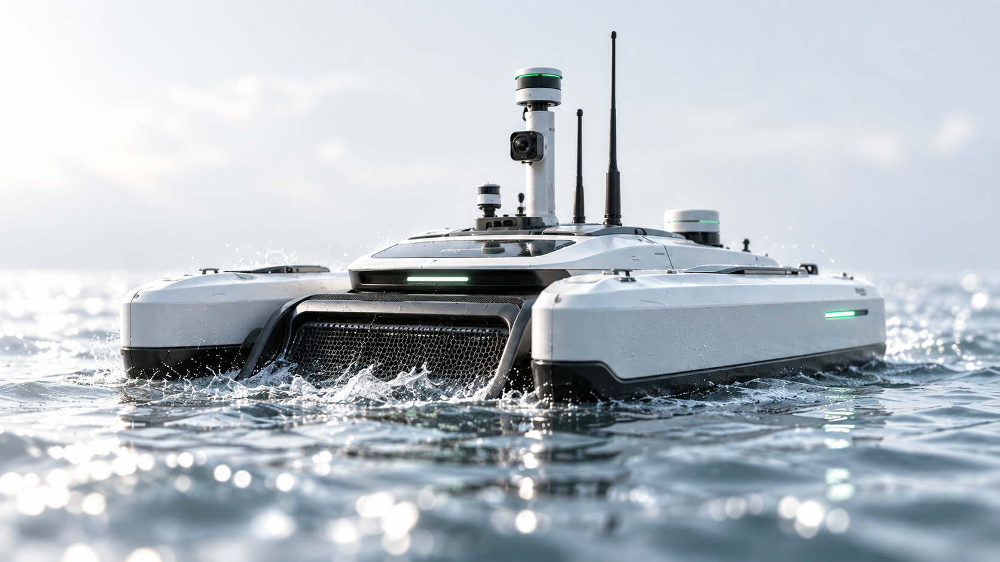
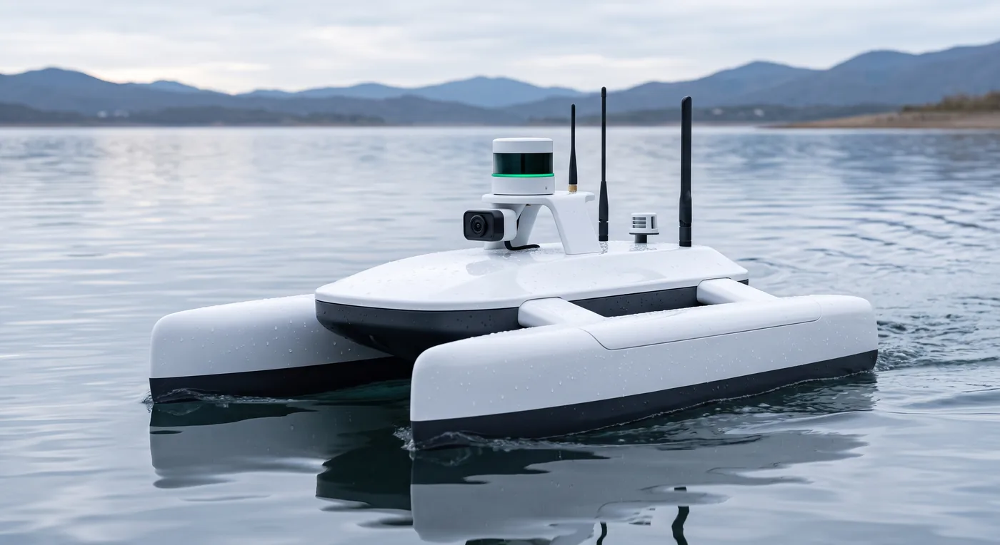
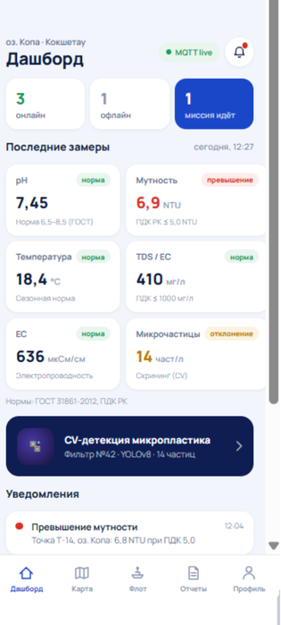
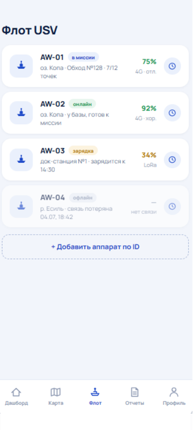
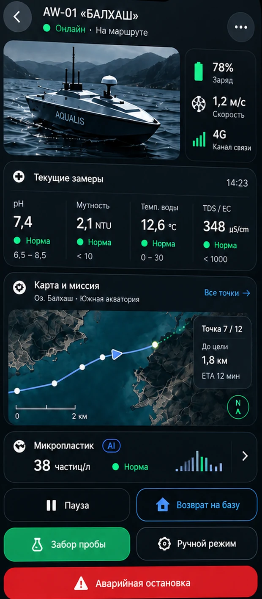
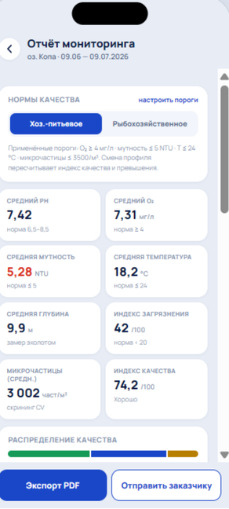
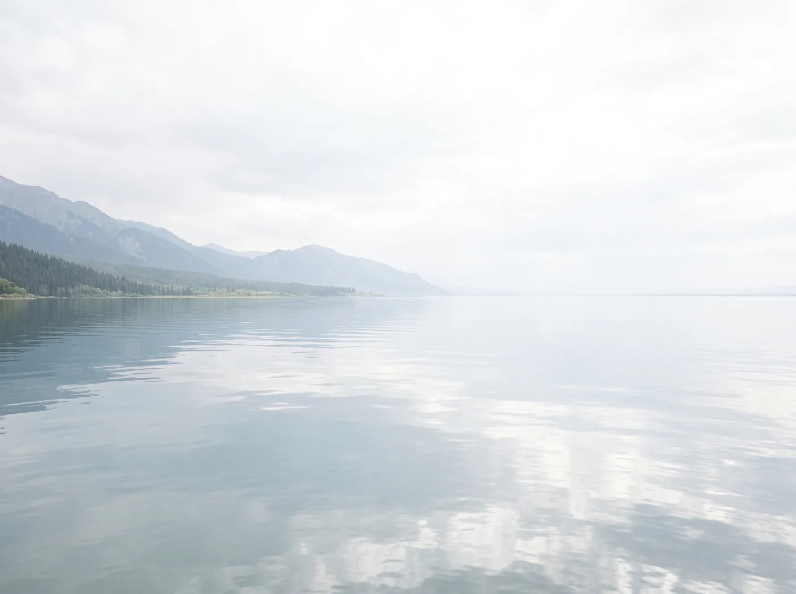
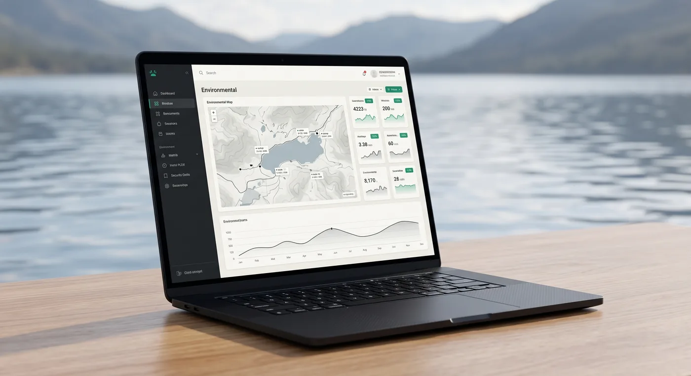

Качество воды
94%

АВТОНОМНЫЙ МОНИТОРИНГ ВОДЫ
Безэкипажный катамаран. Данные в реальном времени.
Чистые реки, живые экосистемы
и доказуемый источник загрязнения.
94%
7.4
24/7
Автономность
без экипажа
на борту
ДАННЫЕ ДЛЯ ЧИСТЫХ
РЕК КАЗАХСТАНА
РАННЕЕ ОБНАРУЖЕНИЕ
ДОКАЗУЕМЫЙ ИСТОЧНИК
01 — ПРОБЛЕМА
Государственный мониторинг в Казахстане построен на дискретном отборе проб. Залповый сброс между отборами не фиксируется вообще — а когда анализ готов, вода в реке давно сменилась, и доказать, кто сбросил, уже невозможно.
373
створа на 134 водных объекта
Казгидромет ↗17
аккредитованных лабораторий
Kazinform ↗~30%
хозбытовых стоков очищается безопасно
UN-Water · SDG 6 ↗49%
водных объектов с хорошим качеством воды
UN-Water · SDG 6 ↗ДАННЫЕ ДЛЯ ЧИСТЫХ
РЕК КАЗАХСТАНА
ЧИСТЫЕ РЕКИ
ЖИВЫЕ ЭКОСИСТЕМЫ
02 — АППАРАТ
Корпус, узел забора пробы и энергетика рассчитаны на мелководье, взвесь и резкие перепады температуры — условия равнинных рек и водохранилищ Казахстана, а не лабораторного бассейна.
ДАННЫЕ ДЛЯ ЧИСТЫХ
РЕК КАЗАХСТАНА
КОРПУС · ЗОНД
СВЯЗЬ · ЭНЕРГИЯ
02 — АППАРАТ · УЗЛЫ

ТЕХНИЧЕСКИЕ ХАРАКТЕРИСТИКИ
Значения приведены для текущего прототипа и уточняются по результатам полевых испытаний.
03 — КАК ЭТО РАБОТАЕТ
Судно идёт по маршруту и измеряет шесть параметров непрерывно — с привязкой к координатам, времени и глубине.
в реальном времениСервер сравнивает поток с фоновой нормой этого участка и отделяет реальный выброс от сезонного дрейфа и погоды.
секунды после замераСочетание параметров сверяется с сигнатурами пяти типов загрязнения — система называет вероятный характер сброса.
с оценкой уверенностиКарта, график превышений относительно ПДК, фото с места и журнал калибровки — в форме, пригодной для передачи в надзор.
PDF и выгрузка данных04 — ГЛАВНОЕ ОТЛИЧИЕ
Датчик показывает превышение. Ценность появляется, когда по сочетанию параметров можно назвать характер сброса — это и есть то, ради чего к нам приходят. Ниже — пять сигнатур, которые различает система.
Канализационный выпуск, септик, неподключённый частный сектор.
СИГНАТУРА
Характерный признак: рост органики и падение кислорода при стабильной электропроводности.
Смыв с полей, животноводческие стоки, орошаемые массивы.
СИГНАТУРА
Характерный признак: пики после полива и дождей, привязка к границе угодий.
Обогатительные фабрики, хвостохранилища, металлургия, гальваника.
СИГНАТУРА
Характерный признак: скачок минерализации и pH за минуты — природа так не меняется.
Нефтебазы, трубопроводы, перевалка, промысловые площадки.
СИГНАТУРА
Характерный признак: оптический след на поверхности плюс химия — подтверждение с двух каналов.
Паводок, взмучивание дна, цветение, естественный вынос железа.
СИГНАТУРА
Отсекается отдельно: ложная тревога стоит дороже пропущенной, если по ней выезжает инспектор.
05 — ПЛАТФОРМА
ЧИСТАЯ ВОДА
БОЛЬШЕ ВОЗМОЖНОСТЕЙ
Дашборд с последними замерами, флот аппаратов, телеметрия судна на воде и готовые отчёты — в одном приложении. Переключайте вкладки, чтобы посмотреть экраны.




SUBULAQ
МОНИТОРИНГ СЕГОДНЯ —
БЕЗОПАСНАЯ ВОДА ЗАВТРА
06 — КОМУ ЭТО НУЖНО
01
Боль. Загрязнение приходит на водозабор без предупреждения — реагируют постфактум.
Результат. Сигнал выше по течению и время, чтобы переключить забор или остановить подачу.
02
Боль. При ЧП на реке подозревают предприятие — опровергнуть нечем.
Результат. Независимый ряд данных выше и ниже сброса — доказательство в обе стороны.
03
Боль. Створов мало, между отборами водоём никто не видит.
Результат. Покрытие участков без стационарных постов и данные для отчётности.
04
Боль. Экопроект упирается в отсутствие своих измерений — остаются чужие цифры.
Результат. Свои замеры на своём водоёме и материал для исследований.
07 — СРАВНЕНИЕ
| ПАРАМЕТР | Ручной отбор проба в лабораторию |
Стационарный пост буй / створ |
SuBulaq безэкипажное судно |
|---|---|---|---|
| Охват территории | Точка выезда | Одна фиксированная точка | Маршрут по всему участку |
| Частота измерений | По графику категории | Непрерывно в одной точке | Непрерывно вдоль русла |
| Время до результата | Дни и недели | Минуты | Минуты, с привязкой к месту |
| Определение источника | Только версия инспектора | Фиксирует факт, не источник | 5 типов по сигнатуре |
| Стоимость года эксплуатации | Растёт с числом выездов | Высокая: монтаж и обслуживание поста | Одна подписка на участок |
Сравнение по методической части: ручной отбор и стационарный пост описаны по действующей практике государственного мониторинга. Экономику года эксплуатации подтверждаем на пилоте по вашему объекту.
08 — ТАРИФЫ
ЧИСТЫЕ ВОДЫ
СИЛЬНЫЕ РЕШЕНИЯ
Один USV. Разный масштаб задач.
Для школ, вузов и эко-НКО
Для водоканалов и предприятий
Для акиматов и госструктур
МОНИТОРИНГ
АНАЛИЗ
РЕАЛЬНЫЕ ИЗМЕНЕНИЯ
SUBULAQ
AUTONOMOUS WATER MONITORING
09 — ПРОЦЕСС
ЧИСТЫЕ ВОДЫ
РЕАЛЬНЫЕ РЕШЕНИЯ
Пилот ограничен по срокам и объёму: никакой закупки оборудования, никаких обязательств после отчёта. Дальше решаете вы.
Созваниваемся, обсуждаем ваш водоём, определяем участок и что именно вы хотите узнать.

Приезжаем на водоём, снимаем базовую карту участка, калибруем приборы и строим маршрут.
Судно идёт по маршруту, вы получаете данные в приложении. В конце — отчёт с картой, графиками и рекомендациями.

ЧТО НУЖНО ОТ ВАС: ДОСТУП К БЕРЕГУ, КОНТАКТ ОТВЕТСТВЕННОГО И СОГЛАСОВАНИЕ СЪЁМКИ НА ОБЪЕКТЕ. ВСЁ ОСТАЛЬНОЕ — НА НАС.
SUBULAQ
AUTONOMOUS WATER MONITORING
10 — ВОПРОСЫ
Коротко о работе аппарата, данных и эксплуатации.
В ледостав судно не работает — это честное ограничение. На зиму аппарат снимается на обслуживание и поверку приборов, а мониторинг сводится к точечным отборам на майнах. Сезон хода — от схода льда до ледостава; для большинства объектов это 7—8 месяцев, включая паводок, когда происходит основная часть сбросов.
Аппарат рассчитан на внутренние водоёмы: реки, водохранилища, озёра. При превышении порога по волнению маршрут прерывается автоматически, судно возвращается в точку схода и уведомляет оператора. Данные, собранные до прерывания, сохраняются и попадают в отчёт с отметкой об условиях.
Обслуживание входит в подписку Pro и Gov: калибровка, замена расходников на датчиках, плановая поверка и ремонт. Вашего оператора мы обучаем базовым операциям — спуск, зарядка, промывка — на этапе пилота. Глубокий сервис остаётся на нас.
По умолчанию — в облаке с размещением на территории Республики Казахстан. Данные принадлежат заказчику, выгружаются в CSV в любой момент. Для тарифа Gov возможно развёртывание в контуре заказчика; условия фиксируются договором.
Нужно разделять две вещи. Непрерывные измерения на борту — это индикаторный контроль: он показывает, где и когда искать, и служит основанием для реакции. Юридически значимое заключение даёт аккредитованная лаборатория. Поэтому аппарат несёт до шести контрольных ёмкостей: при обнаружении аномалии он отбирает пробу на месте и в момент события — её и передают в лабораторию. Мы не заменяем лабораторию, мы приводим её к нужной точке вовремя.
На время ремонта по тарифам Pro и Gov предоставляется подменный аппарат, чтобы ряд наблюдений не прерывался. Судно ведёт трек и подаёт сигнал при потере связи. Ответственность сторон, страхование и сроки замены фиксируются в договоре до начала работ.
11 — НАЧАТЬ
Ответим в течение рабочего дня. Первый разговор ни к чему не обязывает: разберём объект и скажем честно, поможет ли здесь наш аппарат.